이미지를 길게 누르거나 우클릭해서 저장해 주세요.
클립스튜디오(.clip)·포토샵(.psd) 파일이나 PNG 이미지를 끌어다 놓아 주세요.
PNG는 여러 장을 한 번에 올리면 한 장씩 파츠가 됩니다.
파일은 기기 내에서 처리되고, 어디에도 업로드되지 않습니다.
캐릭터 사진관은 PC 화면에 맞춰 만들어졌습니다.
휴대폰에서도 사용할 수 있지만, 화면이 좁아 파츠를 정리하기 불편하거나 큰 파일은 느리게 작동할 수 있습니다.
가능하면 PC에서 이용해 주세요!
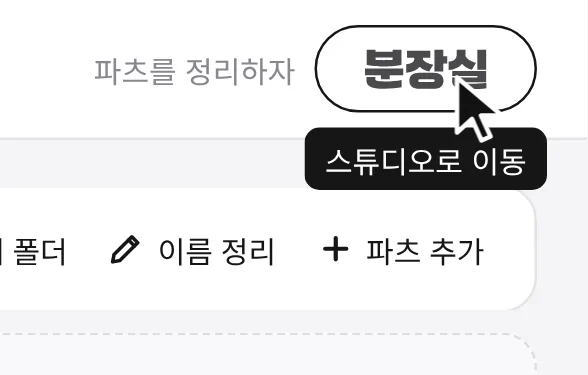
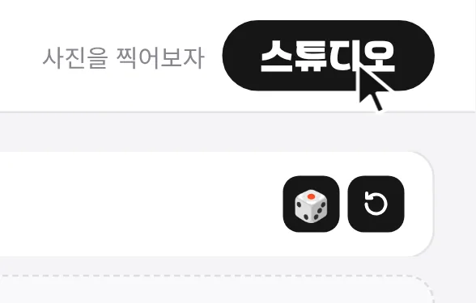
파일 속 레이어 하나하나가 캐릭터를 꾸미는 파츠가 됩니다.
우상단 버튼으로 분장실과 스튜디오를 오갈 수 있습니다. 분장실에서는 파츠를 정리하고 이름을 고칠 수 있고, 스튜디오에서는 파츠를 골라 꾸며보며 자유롭게 사진을 찍어볼 수 있습니다.
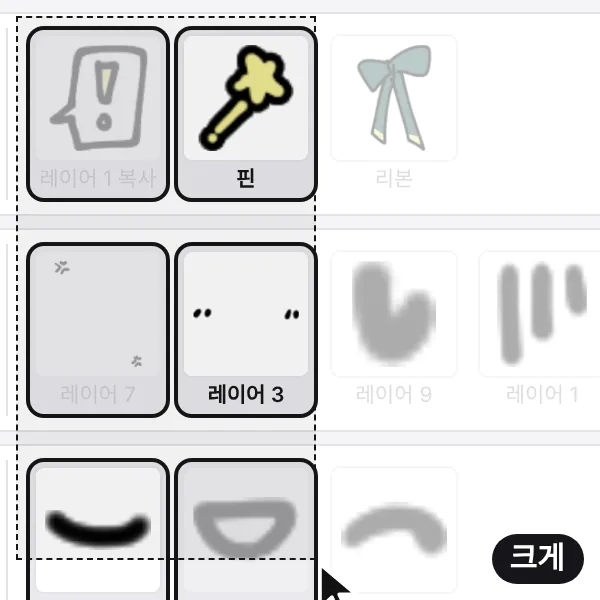
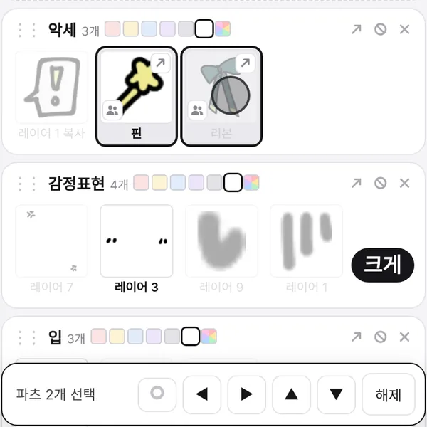
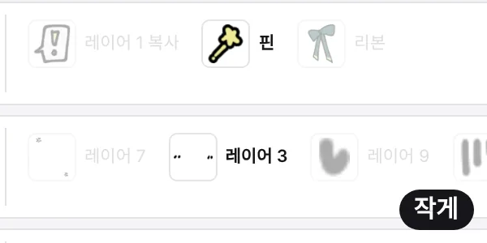
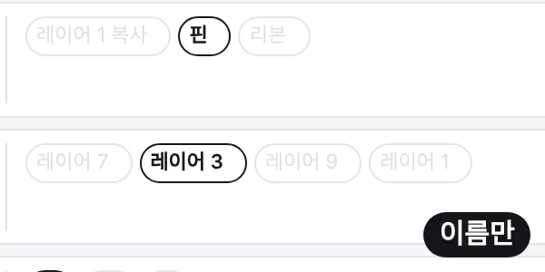
각 파츠와 폴더는 눌러서 켜고 끌 수 있습니다. 켜진 파츠만 진하게 보입니다.
분장실에서 파츠를 누르면 원하는 수만큼 선택되고, 으로 켜고 끌 수 있습니다. 폴더는 빈 곳을 누르면 켜고 꺼집니다. 켜진 파츠만 진하게 보입니다.
파츠, 또는 폴더 왼쪽 부분을 잡은 상태에서 아무데에나 옮겨봅시다. 드래그하면 한 번에 선택됩니다.
선택한 파츠는 아래 막대의 ◀ ▶ ▲ ▼로 옮길 수 있습니다. 폴더는 ⋮⋮를 누른 뒤 놓을 폴더를 누르면 옮겨집니다.
에서 크게 · 작게 · 이름만으로 보는 방식을 바꿀 수 있습니다.
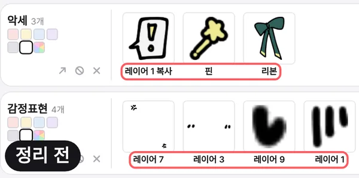
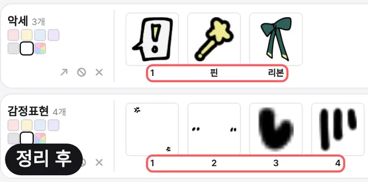
파츠와 폴더의 이름은 길게 누르면 바꿀 수 있습니다.
새 폴더를 추가해 정리합니다.
'레이어 1' 등의 이름을 깔끔하게 정리해줍니다. 정해둔 이름은 그냥 둡니다.
을 누르면 도중에 새로운 파츠를 추가할 수 있습니다. (.psd, .clip, .png 지원)
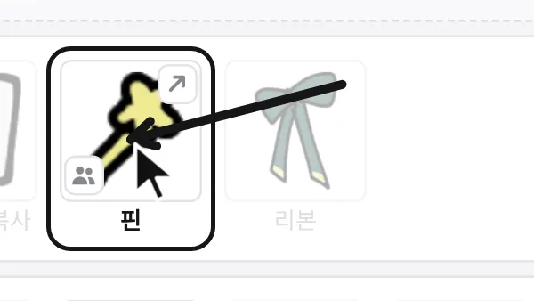
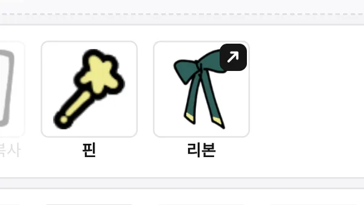
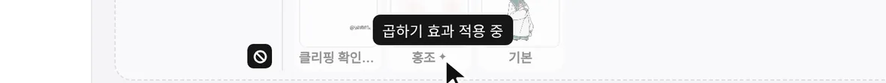
파츠에 커서를 올리면파츠를 누르면 이 나타납니다. 이 버튼을 누른 채로 원하는 파츠나 폴더에 화살표를 당겨 놓습니다. 클리핑 설정은 기본적으로 파일 설정을 따라갑니다.
커서를 올리면누르면 파츠나 폴더에 적용된 효과를 볼 수 있습니다.
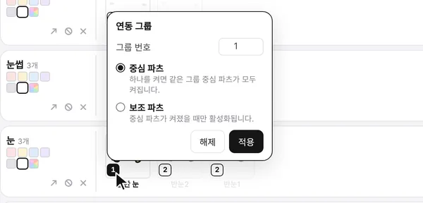
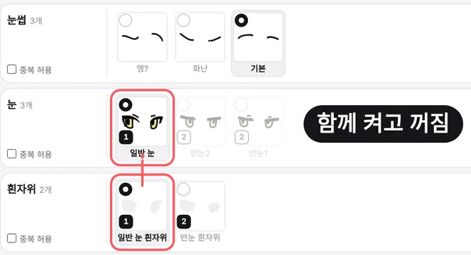
특정 조건에서 함께 쓰이는 파츠(ex. 반만 뜬 눈매, 눈동자, 줄어든 흰자위)를 다룰 때 유용하게 쓸 수 있습니다. 파츠의 을 눌러 그룹 번호와 역할을 정합니다.
스튜디오에서 중심 파츠 하나를 켜면 같은 그룹의 중심 파츠가 모두 켜지고, 보조 파츠는 같은 그룹의 중심 파츠가 켜졌을 때만 활성화됩니다.
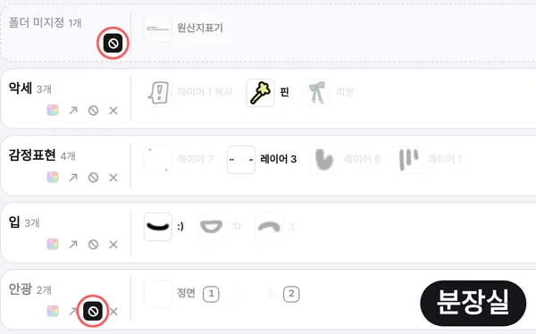
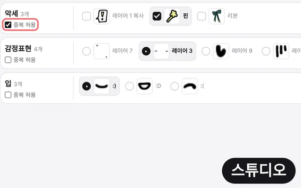
을 누르면 그 묶음이 스튜디오에서 보이지 않습니다. 고정된 파츠를 숨겨두면 보다 쉽게 파츠를 움직일 수 있습니다.
스튜디오에서 중복 허용을 체크하면 한 폴더 안의 파츠를 여러 개 함께 켤 수 있습니다. (체크하지 않으면 하나만 고를 수 있습니다.)
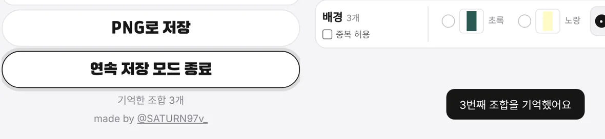
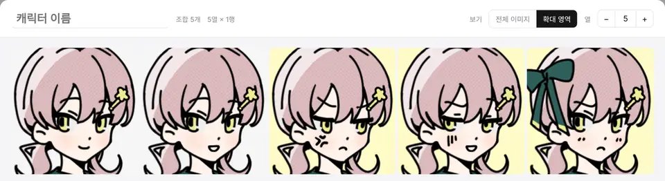
파츠를 골라 조합하고 PNG로 저장합니다.
PNG 연속 저장을 켜면 Enter 키를을 누를 때마다 지금 조합을 기억합니다. 모드를 끝내면 한 번에 확인하고 .zip으로 내보낼 수 있습니다.
도움말은 언제든 다시 볼 수 있습니다.
또한, 오류가 발견되면 언제든 이곳으로 연락해주세요.
이미지를 길게 누르거나 우클릭해서 저장해 주세요.